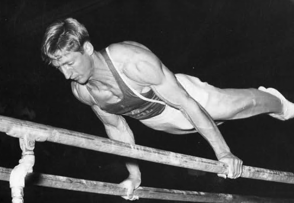

| Art Shurlock (USA) |
1959 NCAA Pommel Horse Champion
1963 USGF All-Around Champion
1958 Worlds Team Member and 1964 Olympian

Art was born on September 8, 1937 in Chicago. He attended the University of California at Berkeley where he was coached by the legendary Hal Frey (Shurlock also trained with Frey in Chicago).
In 1965, he became head coach for the UCLA men's gymnastics team and eventually turned them into a national powerhouse, winning two NCAA Championship and nine Pac-10 Championship titles, and amassing a 316-172 (72.1%) winning record. Peter Vidmar, Mitch Gaylord, Tim Daggett, Tony Pineda, Scott Keswick, and Chris Waller are just a few of the gymnasts that Shurlock coached at UCLA.
In 1995, UCLA dropped men's gymnastics and swimming to plug a $900,000 deficit in the athletics department. Shurlock acccepted an early retirement package.
Competition Results
1957
AAU Championships: 1st PH
1958
AAU Championships: 3rd AA, 1st PH, 2nd HB
World Championships: 7th Team, 43rd AA
1959
AAU Championships: 6th AA, 1st HB, 2nd PH
NCAA Championships: 2nd AA, 1st PH, 2nd R, 3rd HB
Pacific Coast Conference Championships: 2nd Team, 1st AA, 1st HB, 2nd PH, 2nd PB, 3rd R
1960
AAU Championships: 4th HB, 6th PH
NCAA Championships: 2nd AA, 3rd PH, 3rd R, 3rd HB, 4th PB
Pacific Intercollegiate Championships: 2nd Team, 2nd PH, 2nd PB, 3rd FX, 3rd R
1961
AAU Championships: 8th AA, 2nd PH
POL-USA Dual Meet: 1st Team, 3rd AA
Southern Pacific AAU Senior Championships: 3rd AA, 3rd PH, 4th FX, 4th V, 4th PB, 5th HB
USA-JPN Dual Meet: 2nd Team, 9th AA
1962 1963 1964 This page was created on February 25, 2021 and was last updated on June 23, 2021.
Ben Price Invitational: 1st AA
Pasadena Invitational: 3rd AA
San Francisco Invitational: 3rd AA, 4th PB, 5th PH
Ben Price Invitational: 1st AA
Pasadena National Invitational: 1st AA, 1st PH, 1st V, 1st PB
Santa Monica Gymfest Invitational: 1st AA, 1st PH, 1st HB, 3rd FX, 3rd R
USGF Championships: 1st AA, 1st R, 1st V, 1st HB, 3rd PB
Western Regional Championships: 1st AA, 1st FX, 1st R, 1st PB, 1st HB
AAU Championships: 5th AA, 2nd HB, 3rd PH, 5th FX
Ben Price Memorial Invitational: 1st AA
East v. West Meet: 2nd PB, 3rd PH, 5th HB
Olympic Games: 7th Team, 68th AA
US Olympic Trials: 5th AA
© Gymn Forum